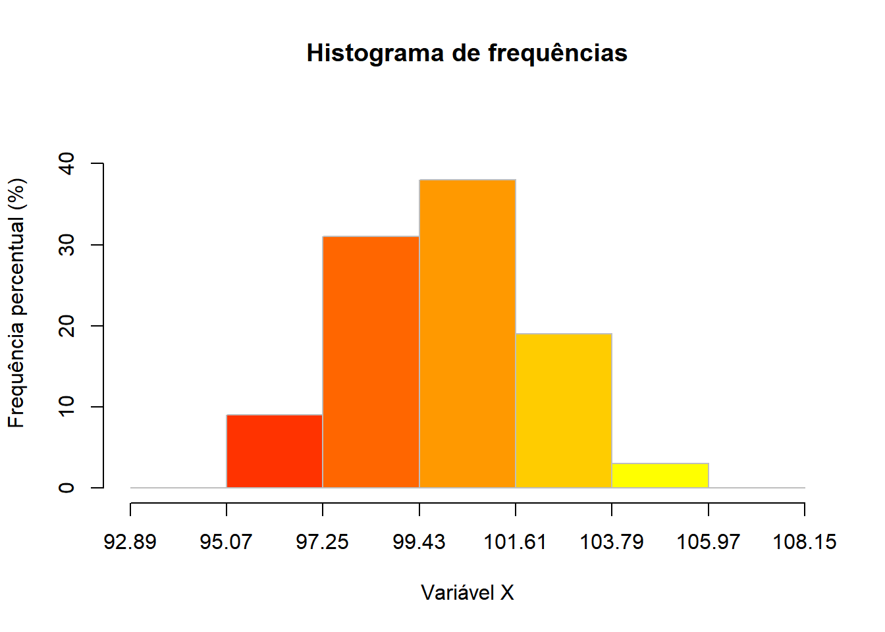
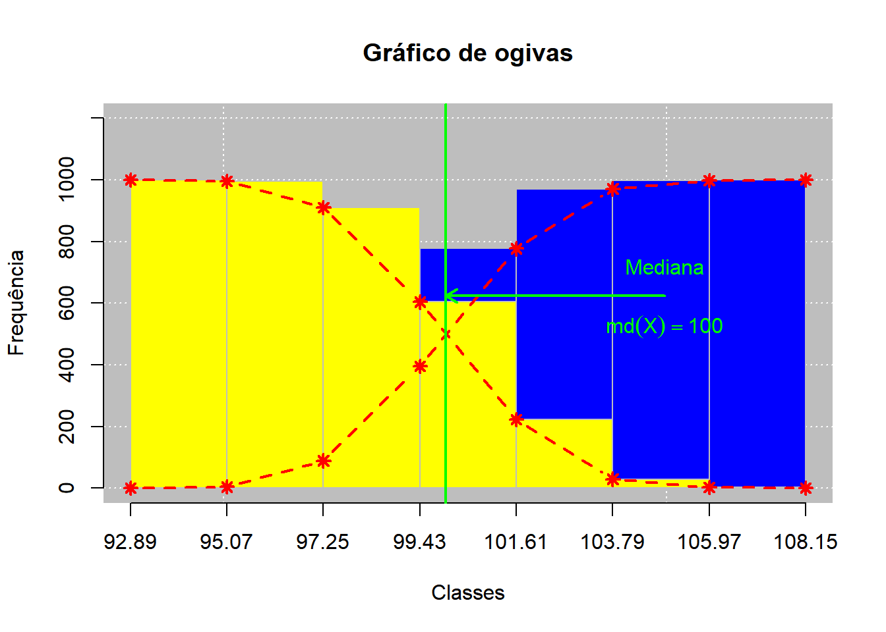
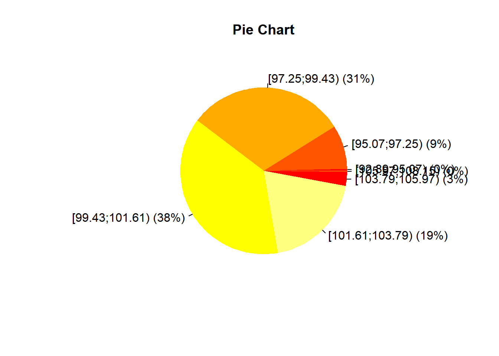

Código
# Instalando diretamente do CRAN
install.packages("leem")

Estatística e Probabilidade
Prof. Ben Dêivide (DEFIM/CAP/UFSJ)
Este relatório apresenta o pacote leem (Laboratório de Ensino à Estatística e à Matemática), desenvolvido pelo Prof. Ben Dêivide de Oliveira Ferreira (DEFIM/CAP/UFSJ) como ferramenta auxiliar para o ensino introdutório de Estatística e Matemática no ambiente R (leem2022?).
O leem oferece funções para tabulação de dados, geração de gráficos estatísticos, cálculo de medidas descritivas, avaliação de probabilidades e realização de testes de hipóteses — tudo com uma interface intuitiva que facilita o uso em sala de aula. O relatório cobre desde a instalação do ambiente R/RStudio até a aplicação das principais funções do pacote.
Apresentar o pacote leem e suas principais funcionalidades para análise estatística introdutória no ambiente R.
leemnew_leem(), tabfreq())hist(), ogive(), piechart())mpos(), variance(), sdev(), cv())P())th())A Estatística Descritiva é o ramo da estatística responsável por organizar, resumir e apresentar dados de forma compreensível. Os principais instrumentos incluem tabelas de frequência, gráficos e medidas numéricas de posição e dispersão (Batista e Oliveira, 2022).
O pacote leem foi desenvolvido com o objetivo de tornar essas ferramentas acessíveis no ambiente R, integrando uma interface gráfica interativa (GUI) baseada nos pacotes shiny e tcltk. Isso permite que o usuário realize análises estatísticas completas, com ou sem a necessidade de programar diretamente em R (leem2022?).
Os conceitos centrais abordados neste relatório são:
As análises deste relatório foram desenvolvidas com o pacote leem, seguindo o roteiro de código apresentado pelo Prof. Ben Dêivide na aula prática. Os dados utilizados são simulados a partir de uma distribuição normal com média 100 e desvio padrão 2, com semente fixada em set.seed(10) para garantir reprodutibilidade.
leem (CRAN / GitHub: bendeivide/leem)rnorm(1000, mean = 100, sd = 2)k = 7)O R é a linguagem/ambiente de programação e o RStudio é a IDE (Integrated Development Environment) que facilita seu uso. Ambos devem ser instalados antes do leem.
Passo 1 — Instalar o R: Acesse https://cran.r-project.org, escolha o instalador para o seu sistema operacional (Windows, macOS ou Linux) e siga as instruções de instalação.
Passo 2 — Instalar o RStudio: Acesse https://posit.co/download/rstudio-desktop e baixe a versão gratuita do RStudio Desktop.
O R deve ser instalado antes do RStudio. O RStudio detecta automaticamente a instalação do R ao ser iniciado.
leemO leem está disponível no CRAN (repositório oficial do R) e também no GitHub do Prof. Ben Dêivide. Há duas formas de instalação:
# Instalando diretamente do CRAN
install.packages("leem")Para instalar a versão mais recente em desenvolvimento, é necessário instalar primeiro as dependências e o pacote devtools:
# Instalando dependências
pkgs <- c("manipulate", "tkRplotR", "tkrplot", "crayon", "diagram")
install.packages(pkgs)
# Instalando a versão de desenvolvimento do GitHub
# install.packages("devtools")
devtools::install_github("bendeivide/leem")# Carregando o pacote
library(leem)
# Abrindo a interface gráfica (GUI) — em desenvolvimento
leem()A função leem() abre uma interface gráfica interativa que permite realizar análises estatísticas sem necessidade de programar diretamente. A GUI está em desenvolvimento contínuo pelo grupo de pesquisa do Prof. Ben Dêivide na UFSJ.
A tabulação de dados é o processo de organizar as observações em classes de frequência, permitindo visualizar a distribuição dos dados de forma estruturada. No leem, esse processo é realizado em duas etapas: preparação do objeto com new_leem() e geração da tabela com tabfreq().
new_leem() — Criar objeto leemConverte um vetor de dados em um objeto da classe leem, definindo o tipo de variável. É o ponto de entrada para todas as análises do pacote.
Argumento principal: variable — define o tipo de variável:
1 = variável qualitativa2 = variável quantitativa contínualibrary(leem)
# Fixando a semente para reprodutibilidade
set.seed(10)
# Gerando 1000 observações de uma distribuição normal
dados <- rnorm(1000, mean = 100, sd = 2)
# Criando o objeto leem
obj_leem <- new_leem(dados, variable = 2)tabfreq() — Tabela de frequênciasGera a tabela de distribuição de frequências a partir de um objeto leem. Organiza os dados em classes e calcula as frequências absoluta, relativa e acumulada.
Argumento principal: k — número de classes (intervalos)
# Gerando a tabela de frequências com 7 classes
tab <- dados |>
new_leem(variable = 2) |>
tabfreq(k = 7)
tab
Tabela de frequência
Tipo de variável: continuous
Classes Fi PM Fr Fac1 Fac2 Fp Fac1p Fac2p
1 92.89 |--- 95.07 4 93.98 0.00 4 1000 0 0.4 100.0
2 95.07 |--- 97.25 85 96.16 0.09 89 996 9 8.9 99.6
3 97.25 |--- 99.43 307 98.34 0.31 396 911 31 39.6 91.1
4 99.43 |--- 101.61 381 100.52 0.38 777 604 38 77.7 60.4
5 101.61 |--- 103.79 194 102.70 0.19 971 223 19 97.1 22.3
6 103.79 |--- 105.97 27 104.88 0.03 998 29 3 99.8 2.9
7 105.97 |--- 108.15 2 107.06 0.00 1000 2 0 100.0 0.2
==============================================
Classes: Agrupamento de classes
Fi: Frequência absoluta
PM: Ponto médio
Fr: Frequência relativa
Fac1: Frequência acumulada (abaixo de)
Fac2: Frequência acumulada (acima de)
Fp: Frequência percentual
Fac1p: Frequência acumulada percentual (abaixo de)
Fac2p: Frequência acumulada percentual (acima de) O operador |> (pipe nativo do R, disponível a partir da versão 4.1) encadeia operações, passando o resultado da expressão à esquerda como primeiro argumento da função à direita. Isso torna o código mais legível e sequencial.
A tabela gerada por tabfreq() contém as seguintes colunas:
| Coluna | Descrição |
|---|---|
| Classes | Intervalos de cada classe |
| fi | Frequência absoluta |
| fr | Frequência relativa |
| fac | Frequência absoluta acumulada |
| frc | Frequência relativa acumulada |
O leem oferece funções gráficas que operam diretamente sobre o objeto de tabela de frequências, permitindo gerar histogramas, ogivas e gráficos de pizza com personalização visual.
hist() — HistogramaGera um histograma a partir da tabela de frequências. Permite escolher o tipo de frequência exibida nas barras e personalizar cores e rótulos.
Principais argumentos:
| Argumento | Descrição |
|---|---|
freq |
Tipo de frequência: "fi" (absoluta), "fr" (relativa), "fac" (acum. absoluta), "p" (percentual) |
bg |
TRUE/FALSE — exibe ou oculta o fundo colorido |
barcol |
Vetor de cores para as barras |
xlab |
Rótulo do eixo x |
# Histograma com frequência percentual e cores personalizadas
tab |>
hist(
freq = "p",
bg = FALSE,
barcol = heat.colors(7),
xlab = "Variável X"
)
ogive() — Ogiva (curva acumulada)Gera a ogiva — gráfico da frequência acumulada — a partir da tabela de frequências. Permite exibir a ogiva crescente, decrescente ou ambas simultaneamente, com barras e personalização de cores.
Principais argumentos:
| Argumento | Descrição |
|---|---|
bars |
TRUE/FALSE — exibe barras de frequência acumulada |
both |
TRUE/FALSE — exibe ogiva crescente e decrescente simultaneamente |
barcol |
Cores das barras (vetor de 2 cores quando both = TRUE) |
lpcol |
Cor da linha da ogiva |
pch |
Tipo de ponto nos vértices da ogiva |
A função insert() pode ser encadeada após ogive() para inserir elementos adicionais no gráfico, como a mediana.
# Ogiva com ambas as curvas e inserção da mediana
tab |>
ogive(
bars = TRUE,
both = TRUE,
barcol = c("blue", "yellow"),
lpcol = "red",
pch = 8
) |>
insert(
type = "median",
lcol = "green",
ptext = 0.15
)
A função insert() encadeada após ogive() permite adicionar elementos ao gráfico, como a linha da mediana (type = "median"). O argumento ptext controla o posicionamento do rótulo de texto.
piechart() — Gráfico de PizzaGera um gráfico de pizza (setores) a partir da tabela de frequências, útil para visualizar a proporção de cada classe em relação ao total.
# Gráfico de pizza
tab |>
piechart()
As medidas de posição e dispersão resumem numericamente as características centrais e a variabilidade dos dados. O leem oferece funções dedicadas para cada medida, operando sobre a tabela de frequências.
mpos() — Medidas de PosiçãoCalcula as medidas de posição central: média, mediana e moda.
Argumento principal: grouped — define se o cálculo usa os dados agrupados (em classes) ou os dados brutos originais.
# Medidas de posição (dados não agrupados)
tab |>
mpos(grouped = FALSE)$average
[1] 100.02
$median
[1] 99.99
$mode
[1] "The data set has no mode!"variance() — VariânciaCalcula a variância dos dados — média dos quadrados dos desvios em relação à média. Mede a dispersão em unidades quadráticas.
\[S^2 = \frac{1}{n-1}\sum_{i=1}^{n}(x_i - \bar{x})^2\]
tab |>
variance()[1] 4.50872sdev() — Desvio PadrãoCalcula o desvio padrão — raiz quadrada da variância. Expressa a dispersão na mesma unidade dos dados originais, sendo mais interpretável do que a variância.
\[S = \sqrt{S^2}\]
tab |>
sdev()[1] 2.12cv() — Coeficiente de VariaçãoCalcula o coeficiente de variação (CV) — razão entre o desvio padrão e a média, expresso em porcentagem. Permite comparar a variabilidade relativa entre conjuntos de dados com escalas diferentes.
\[CV = \frac{S}{\bar{x}} \times 100\%\]
tab |>
cv()[1] 2.12Por convenção, considera-se: CV < 15% → baixa variabilidade; 15% ≤ CV ≤ 30% → variabilidade média; CV > 30% → alta variabilidade.
O leem oferece a função P() para o cálculo de probabilidades em diversas distribuições, com suporte a interface gráfica interativa via tcltk.
P() — Cálculo de ProbabilidadesCalcula probabilidades para diferentes distribuições (normal, binomial, Poisson, t de Student, entre outras) e pode exibir a representação gráfica da área calculada.
Sintaxe para distribuição Normal:
# P(-1 ≤ X ≤ 1) para Normal padrão com interface gráfica
P(-1 %<=X<=% 1, mean = 0, sd = 1, gui = "tcltk")O operador especial %<=X<=% define o intervalo de integração. O argumento gui = "tcltk" abre uma janela interativa exibindo a curva da distribuição com a área correspondente à probabilidade calculada sombreada.
Sintaxe para distribuição Binomial:
# P(X = 5) para Binomial com n=10 e p=0,5
P(5, dist = "binomial", size = 10, prob = 0.5)Principais argumentos de P():
| Argumento | Descrição |
|---|---|
| Primeiro argumento | Valor ou intervalo de interesse |
dist |
Distribuição: "normal" (padrão), "binomial", "poisson", etc. |
mean, sd |
Parâmetros da normal (média e desvio padrão) |
size, prob |
Parâmetros da binomial (número de ensaios e probabilidade) |
gui |
Interface gráfica: "tcltk" ou "shiny" |
Os exemplos com gui = "tcltk" requerem ambiente gráfico ativo (não funcionam em modo batch ou ao renderizar o Quarto diretamente). Em sessões interativas do RStudio, a janela é aberta normalmente.
O intervalo de confiança é uma estimativa intervalar de um parâmetro populacional, calculada a partir de dados amostrais. Ele fornece uma faixa de valores dentro da qual o parâmetro verdadeiro se encontra com determinado nível de confiança (ex.: 95%).
\[IC(\mu, 1-\alpha) = \left[\bar{x} - z_{\alpha/2}\frac{\sigma}{\sqrt{n}},\ \bar{x} + z_{\alpha/2}\frac{\sigma}{\sqrt{n}}\right]\]
No leem, o cálculo de intervalos de confiança é acessível por meio da interface gráfica leem() ou integrado ao fluxo de análise das funções de inferência do pacote.
# Acessar via interface gráfica
library(leem)
leem()O teste de hipóteses é um procedimento de inferência estatística que permite tomar decisões sobre parâmetros populacionais com base em evidências amostrais. A lógica central envolve:
th() — Interface para Testes de HipótesesA função th() abre uma interface gráfica interativa do leem para realização de testes de hipóteses, permitindo selecionar o tipo de teste, inserir os dados e visualizar os resultados graficamente.
# Abrindo a interface de testes de hipóteses
th()A função th() é uma GUI interativa e requer ambiente gráfico ativo. Ela permite realizar testes para a média (com variância conhecida ou desconhecida), testes para proporção e testes de comparação entre grupos, exibindo a região crítica e o p-valor de forma visual.
O fluxo completo de análise com o leem — da simulação dos dados à obtenção das medidas descritivas — é demonstrado abaixo de forma integrada:
library(leem)
set.seed(10)
# Simulando dados
dados <- rnorm(1000, mean = 100, sd = 2)
# Tabulação
tab <- dados |>
new_leem(variable = 2) |>
tabfreq(k = 7)
tab
Tabela de frequência
Tipo de variável: continuous
Classes Fi PM Fr Fac1 Fac2 Fp Fac1p Fac2p
1 92.89 |--- 95.07 4 93.98 0.00 4 1000 0 0.4 100.0
2 95.07 |--- 97.25 85 96.16 0.09 89 996 9 8.9 99.6
3 97.25 |--- 99.43 307 98.34 0.31 396 911 31 39.6 91.1
4 99.43 |--- 101.61 381 100.52 0.38 777 604 38 77.7 60.4
5 101.61 |--- 103.79 194 102.70 0.19 971 223 19 97.1 22.3
6 103.79 |--- 105.97 27 104.88 0.03 998 29 3 99.8 2.9
7 105.97 |--- 108.15 2 107.06 0.00 1000 2 0 100.0 0.2
==============================================
Classes: Agrupamento de classes
Fi: Frequência absoluta
PM: Ponto médio
Fr: Frequência relativa
Fac1: Frequência acumulada (abaixo de)
Fac2: Frequência acumulada (acima de)
Fp: Frequência percentual
Fac1p: Frequência acumulada percentual (abaixo de)
Fac2p: Frequência acumulada percentual (acima de) # Medidas de posição
tab |> mpos(grouped = FALSE)$average
[1] 100.02
$median
[1] 99.99
$mode
[1] "The data set has no mode!"# Medidas de dispersão
tab |> variance()[1] 4.50872tab |> sdev()[1] 2.12tab |> cv()[1] 2.12Os dados simulados seguem uma distribuição normal com média teórica de 100 e desvio padrão de 2. Espera-se que as medidas de posição estimadas pelo leem sejam próximas desses valores populacionais, e que o coeficiente de variação seja baixo (CV < 15%), refletindo a baixa dispersão relativa característica dos dados gerados.
O pacote leem apresenta-se como uma ferramenta didática eficiente para o ensino introdutório de Estatística no ambiente R. Sua principal contribuição é oferecer funções de alto nível — com sintaxe simples e resultados visuais imediatos — que cobrem todo o fluxo de uma análise estatística básica: da organização dos dados até a inferência.
Os principais pontos observados foram:
new_leem() e tabfreq() oferece uma forma clara e reproduzível de gerar tabelas de frequência para variáveis quantitativas contínuashist(), ogive(), piechart()) produzem visualizações prontas com poucas linhas de código e permitem personalização visualmpos(), variance(), sdev(), cv()) operam diretamente sobre a tabela, mantendo coerência com os dados agrupadosP() simplifica o cálculo de probabilidades com suporte visual interativo, tornando conceitos abstratos mais acessíveisleem() e th() ampliam o acesso ao pacote para usuários sem familiaridade com programação